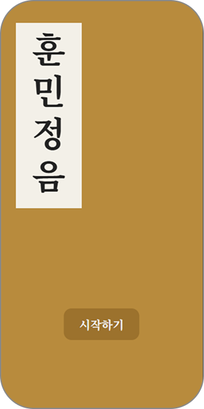
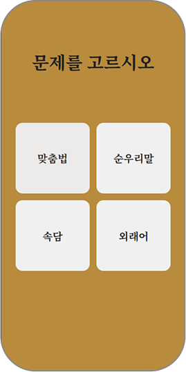
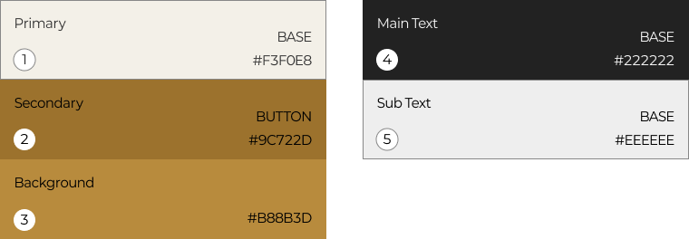
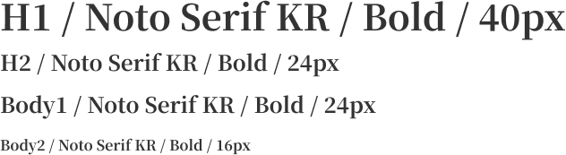
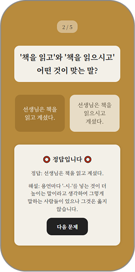
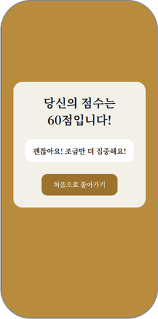

훈민정음
- 제작기간 : 6월 13일 (1일)
- 제작 기여도 : 100% (개인 프로젝트)
- 사용된 스킬 : Figma, React, SCSS, JSON



화면을 클릭하세요!
OVERVIEW
프로젝트 설명
올바른 국어 사용을 주제로 한 교육용 퀴즈 게임
프로젝트 목표
JSON 데이터 기반의 구조를 활용해 카테고리별 문제 자동 구성 구현
UI 설계
Figma를 이용한 디자인 시스템 구축 후 코드를 구현,
Flex 및 Grid 기반의 모바일 중심 카드형 레이아웃으로 구성
차별화
카테고리 선택부터 점수 확인까지의 흐름을 자연스럽게 설계
정답 여부에 따라 해설이 표시 되며 사용자 경험에 맞춰 피드백이 출력
구현한 기능
React 상태 관리(useState) 및 컴포넌트 단위 구조 설계로 구현
사용자의 선택과 정답 유무에 따라 점수 집계 시스템을 구현
DESIGN SYSTEM
Color Scheme

Typography

USER FLOW


RETRACE
문제점
정답 판별, 해설 출력, 점수 계산 등 복합적인 과정을 처리하면서 혼란이 있었습니다.
해결방법
상태를 나눠서 관리하고, 조건문 처리 방식(if, slice, filter)을
활용해
퀴즈 흐름을 정리해가며 구현했습니다.
개선방안
현재는 문제의 수가 5개로 고정되어 있지만, 데이터를 바꾸면 확장
가능한 구조인 만큼
사용자가 퀴즈 수를 조절할 수 있는 기능을
구현해서 사용자 경험을 개선하고자 합니다.